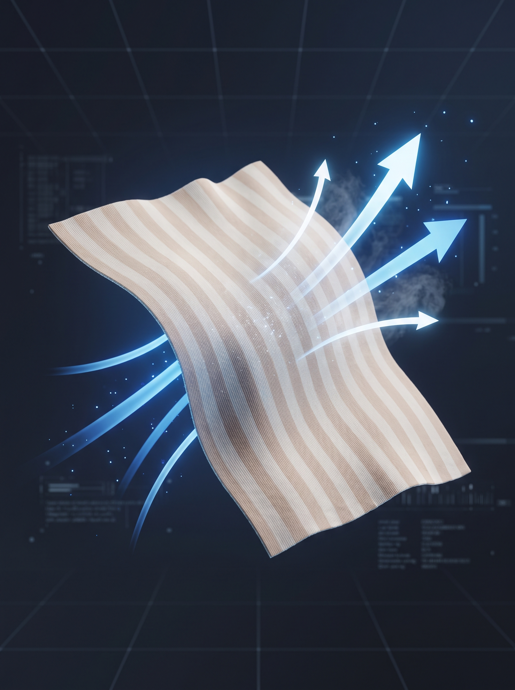

Concept
生理痛、慢性的な冷え、妊娠中の不安に。
単なる衣料品ではない、新しいアプローチ。
私たちは日々、見えないストレスや寒暖差にさらされています。
「いつもどこかが冷えている」「なんとなく不調が続く」
そんな声に耳を傾け、東洋医学の叡智と最新技術を掛け合わせました。
目指したのは、ただ温めるだけでなく、
あなた自身の体温と「調和」するギア。
毎日の暮らしにそっと寄り添う、心地よいお守りのような存在です。
Approach
良かれと思って重ね着をすると、知らず知らずのうちに汗をかきます。
その汗が冷えることで、体温を奪い、さらなる深い冷えを引き起こす。
これが「汗冷え → 冷え → 不調」という悪循環です。
私たちはこの因果ロジックに着目し、ただ温めるだけではない
「調和」をもたらすためのギアを開発しました。
Features

優れた吸水速乾性を持つ高機能素材「COOLMAX」を採用。汗を瞬時に吸い上げて逃がし、常に肌をサラサラに保つことで、不調の原因となる「汗冷え」を根本からブロックします。
「暑い」と感じたその瞬間に、服を脱ぐことなく一瞬で外せるスナップボタン仕様。働く女性の忙しい日常や、外出先のトイレでもメイクや髪型を崩さずストレスなく温度調節が可能です。
冬の厳しい寒さはもちろん、夏の容赦ない冷房対策や、就寝時の寝冷え防止にも。極薄設計で服に響かず、アウターを選ばないため、一年を通してあなたの体を優しく守り抜きます。
日本の熟練した職人が、一つひとつ丁寧に縫製。肌に直接触れるものだからこそ品質を追求し、万が一ご満足いただけない場合のための60日間返品保証をお付けしています。安心してお試しください。
Reviews
オフィスが冷え込むため購入。薄手なのに本当に暖かく、何より汗をかいてもサラサラなのが驚きです。ボタン式でトイレでサッと外せるのが素晴らしいです。
30代 / 会社員
妊活中で基礎体温を上げたくて使い始めました。肌触りが優しくて、チクチクしないのが嬉しい。今では寝る時も日中も手放せません。
20代 / 主婦
毎月薬を飲むほどでしたが、お腹周りを常に温めておくことでかなり楽になりました。国産という安心感も購入の決め手でした。
40代 / パート
| 商品名 | 温熱調和ギア（スナップボタン式腹巻） |
|---|---|
| 素材 | ポリエステル（COOLMAX®）45%、綿35%、ポリウレタン20% |
| サイズ | フリーサイズ（ウエスト約60cm〜95cm対応） |
| 生産国 | 日本（愛知県） |
| お手入れ | 洗濯機可（ネット使用推奨）。乾燥機のご使用はお控えください。 |
FAQ
ご自宅でじっくりとお試しいただけるよう、
安心の「60日間返品保証」をご用意しました。
まずは一度、この心地よさを体感してください。
※Stripeの安全な決済システムへ遷移します。
※Amazon Pay, Apple Pay, クレジットカード対応。